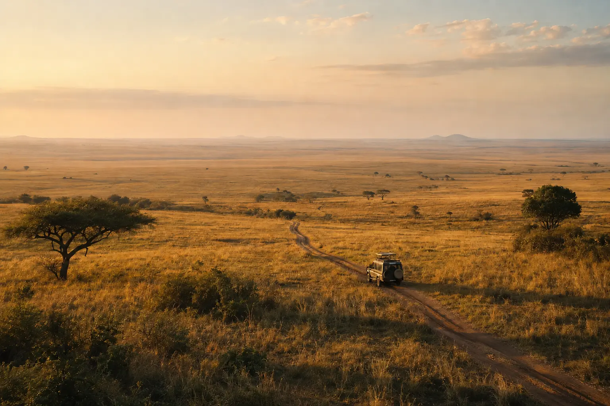

Kenya · 7 days / 6 nights
The Resplendent Maasai Mara Signature Safari
A private safari that gives the Mara time to unfold rather than turning wildlife into a checklist.
- Day 01Arrive gently in Nairobi
Personal airport welcome, private transfer and time to rest before the safari begins.
- Day 02Fly into the Mara
Air connection to the reserve, meet your safari team and ease into a first afternoon game drive.
- Day 03Find your safari rhythm
Early and late game viewing with an unhurried midday pause back at camp.
- Day 04See the Mara differently
A private full-day exploration, conservancy experience or optional sunrise balloon where conditions allow.
- Day 05Allow space to slow down
Photography, a quiet breakfast, guided walking where permitted, or simply time to enjoy camp.
- Day 06One final full day
Return to a favourite landscape or follow the wildlife movement with your guide.
- Day 07Depart, or continue the story
Fly back to Nairobi or connect onward to the coast, another East African chapter or a city stay.